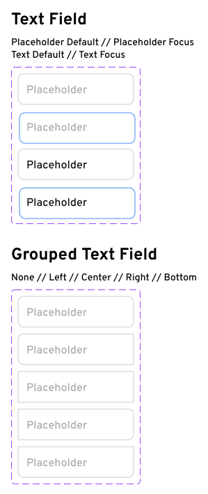

Context: We were asked to pick an existing public website, identify issues with its accessibility, usability, learnability, and memorability. Then, we were asked to create a new, responsive, web design for mobile, tablet, and desktop. I first created a low-fidelity wireframe using a whiteboarding/prototyping tool called Excalidraw. Then, I used Figma to create a high-fidelity design based on the wireframe, deciding on specific metrics for various components and picking out nice colors/fonts. Finally, I implemented the Figma design in HTML/CSS.
Source website
I selected the US Patent & Trademark Office’s Trademark Electronic Search Service (USPTO TESS) search results page, because I’ve found it ugly and hard to use in my own personal experience.
Unfortunately I can’t give you a direct link (because the links expire), but you can:
- Go to https://tmsearch.uspto.gov/bin/gate.exe?f=login&p_lang=english&p_d=trmk
- Click “Basic Word Mark Search (New User)”
- Enter “Brown University” (without quotes) as the “Search Term”
- Click “Submit Query”
Here’s a screenshot of the resulting page as of October 2022:
Problems with the old design
Usability:
- largest text is # of results which isn’t super relevant
- search result order does not reflect closest match to query
- “logout” button is confusing (since closing the tab also seems to log you out)
- extremely long trademark names make the layout look weird, as shown
- LIVE/DEAD are similar in appearance, so it can be hard to tell them apart at a glance even as an expert user
Learnability:
- the blue buttons are somewhat visually inconsistent (in font sizing) and do not look like buttons (especially since other parts of the page use system button styles)
- confusing search syntax
- lots of seemingly duplicate links, unclear which ones are actually going to different places
Memorability:
- The blue buttons have the same overall visual appearance, so it could be hard to remember where the buttons you most frequently need to use are located.
Accessibility (via WAVE):
- WAVE reported several instances where
<table>elements were used for layout, which seems like a result of the website being old rather than an actual issue - It also reported low contrast for the vertical bars between items in the top menu, which isn’t too much of an issue IMO since the spacing already conveys the separation between the menu items even if you couldn’t see the bars
- A couple of inputs were missing labels, which was definitely an issue that should be fixed
- There were a couple of empty links, which would be confusing for screen reader users.
- The text in the bottom is also very small.
Visual redesign
Low-fidelity Wireframing
Visual Design Style Guide
Note: the navigation bar and footer are excluded from the designs attached below because they are taken from the fancy new parts of the USPTO website
Colors & Fonts
Buttons
Text Fields

Other Controls
High-Fidelity Prototyping
Tip! Make sure you’re logged into Figma, then click an element to select it and view exact distances to adjacent elements. Saves on me having to cover the design with a bunch of explicit spacing annotations :)
Desktop (4K)
(cropped)Tablet
Mobile
Final Result!
Credits
- All trademarks listed on the website are of course property of their respective owners
- I copied over the HTML for the header/footer from the main uspto.gov website (specifically https://www.uspto.gov/trademarks/basics), with a few tweaks to clarify that my mockup is not an official government product and a tweak to the breadcrumbs.
- I also brought over the CSS from that webpage to get the HTML to look correct, but all of the components outside of the header and footer were designed by me from scratch (although looking at them now I’m surprised at how closely they match Bootstrap 3’s form controls)
- The sans-serif font in the content area is Overpass, and the monospace font is Fira Code.